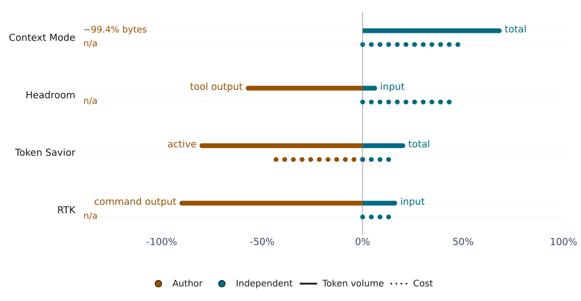
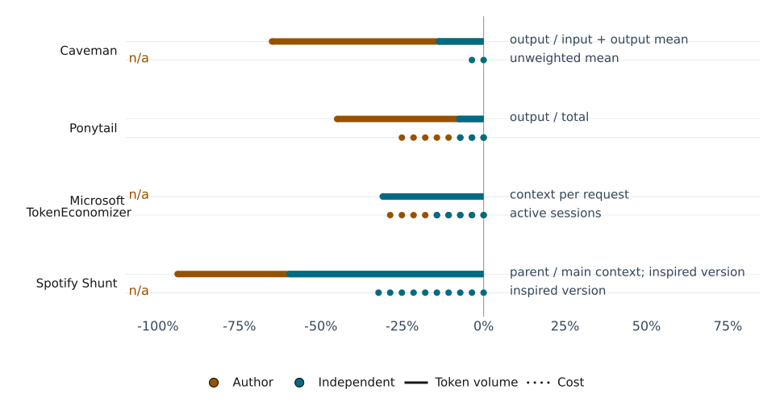

01 / READ THE EVIDENCE
Savings claims need a denominator.
“80% fewer tokens” may describe one tool output, one prompt, or an entire completed task. These are different results. A reduction in one component does not prove a reduction in total billed cost.
This page separates author-reported measurements from independent results. It preserves the test scope, baseline, uncertainty, and source for each product where reported. A blank comparison means the search found no comparable result—not that none exists.
02 / THE SAVINGS MECHANISMS
Different levers. Different bills.
A method can reduce tokens, avoid calls, or change which model runs. Measure the result across the full task.
Compress input
Prompts, history, retrieved context
Trim output
Tool results, generated text
Skip or reuse calls
Caching, routing, memory
Choose another model
Route work by cost or capability
Measure the whole completed task
Input + output+ cache reads / writes+ extra calls / feesTotal task costCheck latency and task success beside cost.
Routing and caching can reduce spending without reducing tokens per request. Compression can add time or model calls. A change in one component is not a whole-task result.
03 / FROM CLAIM TO COMPARISON
Most claims lack a comparable cost test.
Counts classify products, not benchmark runs. One product gets one outcome in this summary.

Scroll horizontally to see the full diagram.
Surveyed solutions128
Numerical author token claim 93
- Cost reduced only1
- Mixed cost results4
- Cost increased only2
- Modeled or incomplete3
- No qualifying cost result83
No numerical token claim recorded 35
- Cost reduced only2
- Cost increased only1
- Modeled or incomplete1
- No qualifying cost result31
Seven products have at least one independent comparison with lower reported cost; four of those also have mixed results. Four other products have a modeled or incomplete estimate. These categories do not establish a general production saving. Review each result and its scope ↓
04 / COMPARISONS THAT CHANGE THE STORY
Same idea. Different denominator.
Each result below is test-specific. These are not matched replications.
01 / CONTEXT COMPRESSION
Headroom
Third-party benchmark −82.5% input in three single-shot tests; cache effects are mixed into the figure. Method ↗
Independent test +6% input, +44% total cost, +13% wall time, +1 percentage point solved across 100 coding tasks.
A separate 50-case report estimates −37% cost from per-request counterfactuals. It is not a separate baseline task run.
Dasein benchmark ↗Benchmark sponsor sells a competing product.02 / COMMAND OUTPUT FILTERING
RTK
Author report 60–90% less supported command output; estimate uses bytes divided by four.
Independent test +16% input, +13% total cost, +12% wall time, −3 points solved across 100 coding tasks.
A separate paper reports −2.7% pooled cost across 712 runs per arm; its holdout-only interval crosses zero.
RTK cost study ↗Results depend on agent, tasks, cache, and configuration.03 / PROMPT COMPRESSION
LLMLingua-2
Author report 50–80% shorter prompts; latency measures come from specific inference tests.
Independent test −76.5% mean input and −42% estimated reader API cost, but −20 points answer accuracy.
The 300-case QA test excludes compression cost; median compression time was 2.3 seconds.
Comparative test ↗Run by a vendor of a competing compressor.04 / AGENT SKILL
Ponytail
Author report −45% output tokens and −26% cost in separate tests.
Independent test −10.3% median task cost over 80 paired tasks; the token change was not significant, and the median-cost interval touches zero.
Quality differences were not significant. This does not establish quality equivalence.
JetBrains evaluation ↗80 paired benchmark tasks.Selected tests with higher costs

Scroll horizontally to see the full diagram.

Read the chart values and limitations
- Context Mode: author reports −99.4% output bytes in selected cases; no comparable author token or cost result. An independent test reports +68% total tokens and +51% cost across 10 coding tasks with two runs each. Quality: 2 wins, 5 losses, 13 ties. Bytes are not tokens.
- Headroom: author reports up to −57% for selected tool-output examples; this is not a whole-task result. The Dasein test reports +6% input, +44% cost, +13% wall time and +1 percentage point solved across 100 coding tasks. Its sponsor sells a competing product.
- Token Savior: author reports −80% active tokens and −45% cost in a separate test. One user test reports +20% total tokens and +14% cost across three tasks, with two runs per arm. Another single-task test reports −13.5% cost with one run per arm.
- RTK: author reports −60% to −90% supported command output, estimated from bytes. The Dasein test reports +16% input, +13% cost, +12% wall time and −3 percentage points solved across 100 coding tasks. Its sponsor sells a competing product.
Selected tests with lower costs

Scroll horizontally to see the full diagram.

Read the chart values and limitations
- Caveman: author reports −65% output tokens. The chart shows an unweighted mean of −13.75% tokens and −3.7% cost across two studies; the token mean combines input and output measures. Dasein reports −19% input and −19% cost; JetBrains reports −8.5% output and +11.6% total cost, affected by one costly run.
- Ponytail: author reports −45% output tokens and −26% cost. JetBrains reports −7.5% total tokens and −10.3% median cost across 80 paired tasks. The token change was not significant; the median-cost interval touches zero. No quality difference was detected; equivalence was not established.
- Microsoft TokenEconomizer: author reports −18.4% to −30.9% cost. A user test reports −31% context per request and −15% cost for four selected sessions with pruning active.
- Spotify Shunt: author reports −82% to −94% when source text is compared with summaries returned to the parent, not whole-session tokens. AIDive reports −59.6% main-context tokens and −33.1% total cost for a separate Shunt-inspired implementation, not Spotify’s plugin. It also reports +65.3% duration and factual errors in two delegated runs.
05 / INDEPENDENT RESULTS
What outside tests found.
The table has a row for each product and extra rows for separate studies. Many rows have no reported change in the four metric columns. Results are not directly comparable across rows.
Token Δ Input, output, or total as statedCost Δ Billed or explicitly modeled costLatency Δ The measure named in the cited testQuality Δ Task performance or stated proxy
Independent results 130 result rows
Showing all 130 independent result rows.
Scroll horizontally to view all columns. On small screens, open “Show all fields” in a row instead.
| Product | Token Δ | Cost Δ | Latency Δ | Accuracy / quality Δ | Evidence and scope |
|---|---|---|---|---|---|
| Adaptive Prompt Compressor | n/a | n/a | n/a | n/a | Searched; no independent quantitative comparison found. |
| AgentikAPI Compressor | n/a | n/a | n/a | n/a | Searched; no independent quantitative comparison found. |
| AgentOne Compression | n/a | n/a | n/a | n/a | Searched; no independent quantitative comparison found. |
| AgentProxy | n/a | n/a | n/a | n/a | Searched; no independent quantitative comparison found. |
| Agora Code | n/a | n/a | n/a | n/a | Searched; no independent quantitative comparison found. |
| AI Token Optimization Gateway | n/a | n/a | n/a | n/a | Searched; no independent quantitative comparison found. |
| Amazon ElastiCache semantic cache | n/a | n/a | −96.3% response time | n/a | DevelopersIO: one repeated query, warm cache; AWS consulting firm. |
| anvanster compressor | n/a | n/a | n/a | n/a | Searched; no independent quantitative comparison found. |
| Apertis context compression | n/a | n/a | n/a | n/a | Searched; no independent quantitative comparison found. |
| base76 token-compressor | n/a | n/a | n/a | n/a | Searched; no independent quantitative comparison found. |
| Bear / The Token Company | −1.5% to −13.1% median input | n/a | n/a | −6.4 to +2.0 pp | GPTZIP comparison, competitor-run; six single-prompt datasets, Llama 3.2 4B. Prosus compares quality against its prior compressor, not an uncompressed baseline. |
| Benjamin-Plus | n/a | n/a | n/a | n/a | Searched; JetBrains runs the published benchmark. An outside review repeats its results. |
| Bifrost MCP Code Mode | −57.8% tokens per request | n/a | −52% per request | n/a | Aleksei Aleinikov, one task, three MCP clients; run count not stated. |
| Caveman | −19% input | −19% total | −17% wall time | +1 pp solved | Dasein benchmark, 100 SWE-bench tasks; cache-aware cost; sponsor sells a competing arm. |
| Caveman — JetBrains | −8.5% output | +11.6% total | n/a | 8 better, 10 worse, 64 tied | JetBrains: 82 paired tasks, forced activation. One costly trial reversed the total cost result; the approximately −10% typical-task estimate is fragile. |
| Chisle | n/a | + on 2 of 3 tasks | n/a | No observed test failures | Independent user test; three coding tasks, three runs per cell. The reported 94% figure has an unclear denominator. No separate tool-output test found. |
| Claude Context | n/a | n/a | n/a | n/a | Searched; independent survey also found no third-party tests. |
| cmdshape | n/a | n/a | n/a | n/a | Searched; no independent quantitative comparison found. |
| Code Context Engine | −87% to −99% input per query | n/a | n/a | n/a | Competing project benchmark: two 20-query fixtures vs full corpus; Recall@10 0.50 and 0.15 without baseline delta; one fixture excludes unsupported queries. |
| Code Executor MCP | n/a | n/a | n/a | n/a | No product-specific independent test found. AIMultiple tested a different code-execution implementation; its results do not establish this product’s performance. |
| Codegraph MCP | n/a | n/a | n/a | n/a | Searched; no independent test of this exact project found. Other CodeGraph projects have separate benchmarks. |
| Command Compressor Agent | n/a | n/a | n/a | n/a | Searched; no independent quantitative comparison found. |
| Compaction | n/a | n/a | n/a | n/a | Searched; no independent quantitative comparison found. |
| Compresh | n/a | n/a | n/a | n/a | Searched; no independent quantitative comparison found. |
| Compresr | n/a | n/a | n/a | n/a | Searched; no independent quantitative product comparison found. External review identifies vendor figures as claims. |
| Compresso API | n/a | n/a | n/a | n/a | Searched; no independent quantitative comparison found. Compresso.ai is a different product. |
| compressoor | n/a | n/a | n/a | n/a | Searched; no independent quantitative comparison found. |
| condense | n/a | n/a | n/a | n/a | Searched; published quantitative comparisons are vendor-run. |
| Context Mode | +68% total | +51% cost | n/a | 2 wins, 5 losses, 13 ties on tests | Independent coding test, 10 tasks, two runs; geometric mean; other quality measures in source. QuickPromptCo reproduced selected output-byte reductions; this is not a session test. |
| context-compress | n/a | n/a | n/a | n/a | Searched; no independent quantitative comparison found. |
| context-compressor Ingrid | n/a | n/a | n/a | n/a | Searched; no independent quantitative comparison found. |
| ContextPilot | n/a | n/a | n/a | n/a | Searched; no independent quantitative comparison found. |
| Copium | n/a | n/a | n/a | n/a | Searched; no independent quantitative comparison found. |
| ctxproxy | n/a | n/a | n/a | n/a | Searched; no independent quantitative comparison found. |
| densely | n/a | n/a | n/a | n/a | Searched; no independent quantitative comparison found. |
| Distil | n/a | n/a | n/a | n/a | Searched; no independent quantitative comparison found. |
| Downsizing | n/a | n/a | n/a | n/a | Searched; no independent quantitative comparison found. |
| Edgee Compress API | n/a | n/a | n/a | n/a | THOL reports −14.7% session cost for the Edgee gateway; interval crosses zero. It does not isolate this API. The benchmark author builds a competing tool. |
| finding-tests | n/a | n/a | n/a | n/a | Searched; the JetBrains test is project-authored. |
| FocusedObjective PromptCompression | n/a | n/a | n/a | n/a | Searched; UsageTap benchmark is affiliated with the product author. |
| Garnet-Owl token-compression | n/a | n/a | n/a | n/a | Searched; no independent quantitative comparison found. |
| Gobstopper | n/a | n/a | n/a | n/a | Searched; no independent quantitative comparison found. |
| gotcontext.ai | n/a | n/a | n/a | n/a | Searched; vendor methodology states its benchmark is not third-party. |
| GPTCache | n/a | n/a | n/a | n/a | CacheEval and vCache paper measure cache-hit errors, but do not give comparable no-cache deltas for all four metrics. |
| h47 token optimizer | n/a | n/a | n/a | n/a | Searched; no independent quantitative comparison found. |
| Headroom | +6% input | +44% total | +13% wall time | +1 pp solved | Dasein benchmark, 100 SWE-bench tasks; cache-aware cost; benchmark sponsor sells a competing arm. Additional: 50-case agent benchmark reports −44% input and −37% estimated cost from per-request counterfactuals; it is not a separate baseline task run. |
| jCodeMunch | −10.5% cache creation; −7.2% output | −5.7% blended cost | −6.0% duration | +8 pp completed | Independent user A/B, one naming-audit task, 25 fresh sessions per arm; completion differences are uncertain. |
| JetBrains Context | n/a | n/a | n/a | n/a | Searched; the JetBrains evaluation is project-authored. |
| jusTokenMax | n/a | n/a | n/a | n/a | Searched; no independent quantitative comparison found. |
| Kong AI Prompt Compressor | n/a | n/a | n/a | n/a | Searched; no independent product-specific comparison found. LLMLingua-2 tests do not measure Kong integration. |
| ktx | n/a | n/a | n/a | n/a | Searched; no independent quantitative comparison found. |
| l0-compressor | n/a | n/a | n/a | n/a | Searched; no independent quantitative comparison found. |
| leanctx | n/a | n/a | n/a | n/a | No independent publication found. The project report credits external contributors but is project-published and compares with another compressor. |
| llm-zip | n/a | n/a | n/a | n/a | Searched; no independent product-specific comparison found. |
| LLMLingua | −50% target | n/a | n/a | −14.4 to +28.6 pp across tasks | Independent study, 13 datasets, three models; prompt-level results. Compression took 180 ms per prompt on A6000, with no baseline end-to-end latency comparison. |
| LLMLingua-2 | −76.5% mean input | −42% reader API estimate | n/a | −20 pp answer accuracy | LLMSlim, competitor-run; 300 paired QA cases, 100 questions; cost excludes compression. Compression median 2.3 s per case. Cross-lingual audit found language-dependent quality losses. |
| llmslim | n/a | n/a | n/a | n/a | Searched; no independent quantitative comparison found. Its comparative article is vendor-run. |
| llmtrim | n/a | n/a | n/a | n/a | Searched; no independent quantitative comparison found. |
| LockLLM | n/a | n/a | n/a | n/a | Searched; no independent quantitative comparison found. |
| LongLLMLingua | −78.2% mean input | n/a | n/a | −11 pp answer accuracy | LLMSlim, competitor-run; 300 paired QA cases, 100 questions. Median compression time 9.3 s. Independent research reports 68.74 s total on a small subset; its 2.16 s baseline comes from another study. |
| MCP Context Graph | n/a | n/a | n/a | n/a | Searched; no independent quantitative comparison found. |
| MCPProxy | n/a | n/a | n/a | n/a | Searched; no independent product-specific comparison found. |
| Merge Gateway compressions | n/a | n/a | n/a | n/a | Searched; no independent product-specific comparison found. |
| Microsoft TokenEconomizer | −31% context per request | −15% active sessions | n/a | 0 pp solved | yoDEV test: eight bug-fix tasks, two repetitions. Cost and context cover four sessions with pruning active; both arms solved 16/16. |
| Mintoken | n/a | n/a | n/a | n/a | Searched; no independent quantitative comparison found. |
| Octomil | n/a | n/a | n/a | n/a | Searched; no independent quantitative comparison found. |
| OpenCompress | n/a | n/a | n/a | n/a | No independent proxy comparison found. CompressBench lists one method submission, without a complete proxy baseline. |
| OptScale Kompressor | n/a | n/a | n/a | n/a | Searched; independent review says replication has not been published. |
| Paritok | −12% to −51.9% task input | n/a | n/a | 0 pp solved | Third-party harness: four seeded tasks, one run per arm, same fixes and passing tests; evaluator built with Paritok. Fixed-corpus repro reports −57.1% tokens and 42.2% identifier preservation; no task-quality test. |
| PCToolkit | n/a | n/a | n/a | n/a | Searched; no independent toolkit-wide comparison found. |
| Perception Compressor | n/a | n/a | n/a | n/a | Searched; no independent quantitative comparison found. |
| Ponytail DietrichGebert | −7.5% total; −13.8% output | −10.3% cost | −10.6% wall time | 6 better, 9 worse, 65 tied | JetBrains, 80 paired coding tasks with rules injected; total-token change was not statistically significant (p=0.12), and the median cost interval touches zero. Quality differences were not significant. TokenBench reports different cost and success outcomes on another task set. |
| Portkey AI Gateway | n/a | n/a | +1.73 ms p50 gateway overhead | n/a | Independent gateway test: direct mock baseline, 100 requests/s; no compression feature or real model. Streaming first-token overhead +27.9 ms p50. |
| ProCut | n/a | n/a | n/a | n/a | Searched; follow-up paper reports no faithful empirical ProCut comparison. |
| Prompt Compression Benchmarker | n/a | n/a | n/a | n/a | Searched; no independent benchmark of this tool found. |
| Prompt Compression Engine | n/a | n/a | n/a | n/a | Searched; no independent quantitative comparison found. |
| prompt-compressor Python | n/a | n/a | n/a | n/a | Searched; no independent quantitative comparison found. |
| PromptCache | n/a | n/a | n/a | n/a | Searched; external review identifies only project microbenchmarks, not end-to-end results. |
| PromptCompress DevvGwardo | n/a | n/a | n/a | n/a | Searched; no independent quantitative comparison found. |
| PromptCompression.com | n/a | n/a | n/a | n/a | Searched; no independent product-specific comparison found. |
| promptopt | n/a | n/a | n/a | n/a | Searched; no independent quantitative comparison found. |
| PromptTrim | n/a | n/a | n/a | n/a | Searched; no independent quantitative comparison found. |
| RepoWise | n/a | n/a | n/a | n/a | No reproducible third-party benchmark found. One user post reports a preliminary unfavorable result but no public data; the post was unavailable for verification. |
| RouteLLM | n/a | −13.8% estimated cost | n/a | −3.94 pp accuracy | IRT-Router study, balanced setting versus always GPT-4o, in-distribution tasks; cost uses token counts and published prices. |
| RTK | +16% input | +13% total | +12% wall time | −3 pp solved | Dasein benchmark, 100 SWE-bench tasks; cache-aware cost; sponsor sells a competing arm. |
| RTK — JetBrains | +3.2% fresh input | +7.6% median per task | n/a | 5 better, 4 worse, 71 tied | JetBrains: 80 clean low-effort task pairs. Input change is not statistically significant (p=0.23). At high effort, median cost was +0.1%. |
| sarup | n/a | n/a | n/a | n/a | Searched; no independent quantitative comparison found. |
| Save-The-Token | n/a | n/a | n/a | n/a | Searched; no independent quantitative comparison found. |
| ScaleDown | n/a | n/a | n/a | n/a | Searched; independent review says compression results lack replication. |
| secondwind | n/a | n/a | n/a | n/a | Searched; no independent quantitative comparison found. |
| Selective Context | −81.3% input | n/a | +202% end-to-end | −19.2 score points | LongLLMLingua paper, competitor-authored; LongBench, GPT-3.5, 2,000-token constraint; mean score 44.0 → 24.8, 15.6 → 47.1 s. |
| SigMap | n/a | n/a | n/a | n/a | Searched; external review summarizes project data without an independent rerun. |
| SlimToken | n/a | n/a | n/a | n/a | Searched; no independent quantitative comparison found. |
| SmartToken | n/a | n/a | n/a | n/a | Searched; no independent quantitative comparison found. |
| snip | n/a | n/a | n/a | n/a | Searched; independent survey also found no third-party result. |
| Sophon | n/a | n/a | n/a | −20 pp answer accuracy | Independent fixture test: 15 fixtures, one judged QA pair each. Output characters −92.7%; tokens not measured. Compression took 60–200 ms per call without baseline timing. |
| Spotify Shunt | n/a | n/a | n/a | n/a | No exact independent reproduction found. AIDive tested a separate routing implementation: −59.6% main-context tokens, −33.1% cost, +65.3% duration, with factual errors in summaries. Hooks did not fire. Transcript analysis estimates eligible traffic, not savings. |
| squeez | n/a | n/a | n/a | n/a | Searched; no independent test found for this Rust CLI. Squeez-2B is a different product. |
| sqz | n/a | n/a | n/a | n/a | Searched; no independent quantitative comparison found. |
| Structured context selector | n/a | n/a | n/a | n/a | Searched; no independent quantitative comparison found. |
| SuperCompress | n/a | n/a | n/a | n/a | Searched; no independent quantitative comparison found. OpenCompass request does not contain results. |
| SWE-Pruner | −15.35% input; +22.33% output | −19.22% normalized cost | n/a | −5 pp solved | TraceLite paper, competing method; 400 SWE-bench tasks, GPT-5.6 Luna; per-observation pruning overhead 0.707 s. Results vary on other models and datasets. |
| Synthelion | n/a | n/a | n/a | n/a | Searched; no independent quantitative comparison found. |
| Tamp | n/a | n/a | n/a | n/a | Searched; comparison repeats the project claim without a Tamp test. |
| Tanuki Context | n/a | n/a | n/a | n/a | Searched; no independent quantitative comparison found. |
| Tare | n/a | n/a | n/a | n/a | Searched; no independent quantitative comparison found. |
| TextCompressor | n/a | n/a | n/a | n/a | Searched; no independent product-specific comparison found. |
| thrift-memory | n/a | n/a | n/a | n/a | Searched; no independent quantitative comparison found. |
| Tokelang | n/a | n/a | n/a | n/a | Searched; no independent quantitative comparison found. |
| Token Optimizer MCP | −23% total tokens | −7.9% cost | n/a | n/a | ComputingForGeeks: one repository analysis task and one run per arm; no edit or task-quality score. |
| Token Savior | +20% total tokens | +14% cost | n/a | 0 pp correct | Competitor user test, three tasks, two runs per arm; all answers correct. A separate single-task test reports −13.5% cost; one run per arm. |
| token-router | n/a | n/a | n/a | n/a | Searched; no independent quantitative comparison found. |
| token-saver | n/a | n/a | n/a | n/a | Searched; no independent quantitative comparison found. |
| Tokenade | n/a | n/a | n/a | n/a | No independent run found. Third-party reanalysis uses THOL data; the benchmark is maintained by Tokenade’s author. |
| tokenfold | n/a | n/a | n/a | n/a | Searched; no independent quantitative comparison found. |
| TokenLean | n/a | n/a | n/a | n/a | Searched; external review did not run a benchmark. |
| TokenMe | n/a | n/a | n/a | n/a | Searched; independent audit notes an earlier project result was withdrawn. |
| TokenPilot | n/a | n/a | n/a | n/a | Searched; no independent test of this CLI found. Studies of the similarly named academic framework test a different product. |
| tokensave | −94% retrieval tokens | n/a | n/a | n/a | Independent user test, 10 fixed queries on one website repo using the product’s benchmark; not full sessions. |
| TokenShrink | n/a | n/a | n/a | n/a | Independent paper: default settings left 95.5% of 800 samples unchanged; mean word-count reduction about −0.3%. Words are not model tokens. |
| tokensqueeze | n/a | n/a | n/a | n/a | Searched; no independent test of this product found. The TokenSqueeze research method is different. |
| toolgz | n/a | n/a | n/a | n/a | Searched; no independent quantitative comparison found. |
| tooltrim | n/a | n/a | n/a | n/a | Searched; no independent test of this project found. Other Tooltrim packages are different products. |
| TOON | −26.4% generated tokens | n/a | +2.9% generation duration | −0.327 correctness score | Independent output-generation study: aggregate TOON vs JSON; models and tasks differ. Agent study finds input-only savings and task-dependent accuracy changes. |
| Traject | n/a | n/a | n/a | n/a | Searched; no independent quantitative comparison found. |
| TRL token reduction | n/a | n/a | n/a | n/a | Searched; no independent quantitative comparison found. |
| TrueFoundry auto routing | n/a | n/a | n/a | n/a | No independent rerun found. External analysis recalculates vendor data. |
| UsageTap Compress | n/a | n/a | n/a | n/a | Searched; available quantitative results are vendor-run. |
| Winnow | n/a | n/a | n/a | n/a | Searched; no independent quantitative comparison found. |
| Workday CPC | n/a | n/a | n/a | n/a | Searched; no independent quantitative comparison found. |
“n/a” means no comparable independent result was found in the search. It does not show that no test exists. Independent does not always mean conflict-free: the cited source can be a competitor, user, or evaluator with another interest.
06 / FULL PRODUCT OVERVIEW
128 solutions, in one place.
Claims and product descriptions come from authors, papers, and public materials. They are not verified by this survey.
Purpose Main = token or cost reduction is a primary goal. Secondary / indirect = related feature, routing, or caching can affect cost without reducing tokens per request.
Savings scope States the denominator reported for the figure. “n/a” means not found in the cited comparison. Figures in one row can come from different tests.
Product overview 128 products
Showing all 128 products.
Scroll horizontally to view all columns. On small screens, open “Show all fields” in a row instead.
| Product | Token Δ | Cost Δ | Latency Δ | Accuracy / quality Δ | Reduction purpose | Savings scope | GitHub stars | Activity observed |
|---|---|---|---|---|---|---|---|---|
| Adaptive Prompt Compressor | −2.1% code to −42.5% chat | n/a | n/a | n/a | Main | Individual prompts; session n/a | n/a | n/a |
| AgentikAPI Compressor | −70% illustrative example | n/a | n/a | n/a | Main for compressor; secondary in gateway | One illustrative prompt; session n/a | n/a | n/a |
| AgentOne Compression | −7% to −8% re-read tokens | n/a | n/a | n/a | Main | Applicable re-reads; session n/a | 9 stars | n/a |
| AgentProxy | −24.9% input; −16.9% output | n/a | n/a | +13.3 pp patches generated | Main | Total tokens across 30 benchmark agent task runs | n/a | n/a |
| Agora Code | −93.6% file example | n/a | n/a | n/a | Main, with persistent memory | One file-read example; session n/a | n/a | n/a |
| AI Token Optimization Gateway | n/a | −60% to −80% claimed | n/a | n/a | Main | Headline cost claim: scope n/a; separate claim: 8-hour agent pipeline | n/a | n/a |
| Amazon ElastiCache semantic cache | n/a | −86.3% tested total cost | −88.3% mean end-to-end | n/a | Secondary | Full tested chatbot query workload; agent session n/a | n/a | n/a |
| anvanster compressor | −16% log-heavy context | n/a | n/a | n/a | Main | Full benchmark task sessions, input and cache tokens only; excludes output | 1 stars | 2026-06-17 commit (main; cached) |
| Apertis context compression | n/a | n/a | n/a | n/a | Secondary | n/a; one-request example only | n/a | n/a |
| base76 token-compressor | −30% to −70% prompt | n/a | n/a | n/a | Main | Individual prompts; headline scope unclear; session n/a | n/a | n/a |
| Bear / The Token Company | −50% input | n/a | up to −49% TTFT | +0.2 pp Claude; −0.3 pp Gemini finance QA¹ | Main | Individual requests; separate finance QA pipeline; agent session n/a | n/a | n/a |
| Benjamin-Plus | −21.9% total per task | −17.9% median | −15.6% task time | +0.03 mean score | Main | 80 paired complete tasks; injected rules | 336 stars | 2026-08-18 commit (main; cached) |
| Bifrost MCP Code Mode | −58.2% input | −55.7% estimated | −26.8% aggregate | 0 pp pass rate | Main for feature; secondary in gateway | 64 benchmark queries and agent loops; input tokens only | 9,551 stars | 2026-11-14 |
| Caveman | about −65% output claimed; unverified | n/a | n/a | n/a | Main | Response output only; headline lacks published benchmark; session n/a | 119,813 stars | 2026-11-14 |
| Chisle | about −46% eligible output | n/a | n/a | n/a | Main | Eligible tool outputs in offline replay of 171 sessions; total session n/a | 994 stars | 2026-10-02 release |
| Claude Context | −39.4% per retrieval task | n/a | n/a | n/a | Secondary | Full retrieval tasks across 30 benchmark instances; coding session n/a | n/a | 2026-07-14 commit (master; cached) |
| cmdshape | n/a | n/a | n/a | n/a | Secondary / indirect | Routed command-output bytes; token and session savings n/a | n/a | n/a |
| Code Context Engine | −94% per query | n/a | n/a | n/a | Main | Retrieval tokens per query; full session n/a | 460 stars | 2026-08-23 commit (main; cached) |
| Code Executor MCP | −97.6% mean per scenario | n/a | n/a | n/a | Main | Tool definitions and results in four scenarios; full session n/a | n/a | n/a |
| Codegraph MCP | −23% | n/a | n/a | n/a | Secondary | One 10-step subagent investigation; parent session n/a | 20 stars | 2026-02-14 commit (main; cached) |
| Command Compressor Agent | −13.78% estimated tool output | n/a | n/a | n/a | Main | Tool results in fixed-input replay; separate full-task input benchmark | 21 stars | 2026-08-12 commit (main; cached) |
| Compaction | −48% to −50% uncached input; −5% to −10% cached | n/a | n/a | n/a | Main | Claimed API-session billed input; coverage unclear; excludes output | 6 stars | n/a |
| Compresh | n/a | n/a | n/a | n/a | Main | Claim at turn 10+; denominator and session impact unclear | n/a | n/a |
| Compresr | about −47% context | about −47% claimed | n/a | +4 pp accuracy | Main | Single-shot document QA per query; agent session n/a | n/a | n/a |
| Compresso API | n/a | n/a | n/a | n/a | Main | n/a; individual prompts, no session comparison | n/a | n/a |
| compressoor | −35.8% to −46% prompt scaffolds | n/a | n/a | n/a | Main | Prompt scaffolds; one live run; aggregate session n/a | 2 stars | n/a |
| condense | −64% example | n/a | n/a | n/a | Main | Illustration scope unclear; separate replay of one recorded session | n/a | n/a |
| Context Mode | n/a⁵ | n/a | n/a | n/a | Main | Selected tool-output bytes; total session tokens n/a | 34,085 stars | 2026-11-14 |
| context-compress | −99.2% tool output | n/a | n/a | n/a | Main | Selected tool outputs in 12-operation illustration; total session n/a | 14 stars | 2026-08-28 commit (main; cached) |
| context-compressor Ingrid | −60% to −80% claimed; −66% example | n/a | n/a | n/a | Main | Input context; one conversation-log example; total session n/a | 4 stars | n/a |
| ContextPilot | −63.8% input word-count proxy | −8.7% simulated | n/a | n/a | Main | Synthetic 40-turn replay; input word proxy; simulated cache; no output | n/a | n/a |
| Copium | −65% to −94% claimed | n/a | n/a | n/a | Main | Headline scope unclear; separate heavy-session claim lacks billing denominator | n/a | n/a |
| ctxproxy | n/a | n/a | n/a | n/a | Secondary | One compression event; message count only; session tokens n/a | n/a | n/a |
| densely | −50% to −87.5% encoded tokens | n/a | n/a | n/a | Main | Individual encoded samples; excludes expansion calls; session n/a | 8 stars | n/a |
| Distil | −83.2% context | n/a | n/a | 0% observed decision changes² | Main | Compressed blocks in synthetic corpus; total session n/a | 21 stars | n/a |
| Downsizing | n/a | n/a | n/a | n/a | Secondary | Claimed dashboard session aggregates; baseline and coverage unclear | n/a | n/a |
| Edgee Compress API | n/a | n/a | n/a | n/a | Main for API; secondary in gateway | n/a for API; separate gateway benchmark covers full tasks | 8 stars | n/a |
| finding-tests | −39.5% total in one task | n/a | n/a | n/a | Secondary | One complete test-writing task; not reproduced on newer models | 41 stars | 2026-08-21 commit (master; cached) |
| FocusedObjective PromptCompression | n/a | n/a | n/a | n/a | Main | n/a; per-submitted-text estimates; session comparison n/a | n/a | n/a |
| Garnet-Owl token-compression | −25.3% prompt | n/a | n/a | −4 pp accuracy | Main | Individual prompts for synthetic logs; complete session n/a | n/a | n/a |
| Gobstopper | −29% input | −16% | n/a | +1.1 pp solved | Main | 89 complete benchmark task runs; token figure input only | 14 stars | n/a |
| gotcontext.ai | about −50% typical; up to −87.4%¹ | up to −95% input cost target with caching¹ | n/a | n/a | Main | Compression calls and documents; cache-based cost target; session n/a | n/a | n/a |
| GPTCache | n/a | −90% claimed³ | n/a | n/a | Secondary | Cost claim scope and baseline unclear; session n/a | 8,219 stars | 2026-09-22 |
| h47 token optimizer | −70% to −97% prompt estimated | n/a | n/a | n/a | Main | Individual long or repetitive inputs; session n/a | n/a | 2026-06-19 commit (main; cached) |
| Headroom | −82.5% input; cache effects mixed | n/a | n/a | −1 pp GSM8K; −5 pp SQuAD EM; 0 pp BFCL | Main | Single-shot QA input, including cache effects; separate full-task tests | 79.6k stars | 2026-09-10 commit (main; cached) |
| jCodeMunch | −96.2% per lookup | n/a | n/a | n/a | Main | Per lookup; separate full-task test | 2.9k stars | 2026-11-14 release |
| JetBrains Context | n/a | up to −48% | up to −59% | n/a | Secondary | Agent benchmark tasks; maxima may be from different tests | 38 stars | 2026-10-13 issue activity |
| jusTokenMax | −60% one-pass inputs | n/a | n/a | n/a | Main | Selected website inputs in one pass; session n/a | 22 stars | n/a |
| Kong AI Prompt Compressor | n/a | n/a | n/a | n/a | Main for plugin; secondary in gateway | n/a; targets for individual prompts; no measured session comparison | n/a | n/a |
| ktx | n/a | n/a | n/a | n/a | Main with session recording | Tool-output characters across calls; full-session token savings n/a | 0 stars | n/a |
| l0-compressor | −87.8% to −97.1% selected command output | n/a | n/a | n/a | Main | Six selected command outputs; separate output-only telemetry | 6 stars | n/a |
| leanctx | n/a | n/a | n/a | n/a | Main | Input per request vs compressor; separate transcript; session n/a | 321 stars | 2026-06-26 commit (main; cached) |
| llm-zip | n/a | n/a | n/a | n/a | Main | Individual documents; full-session impact n/a | 1 stars | n/a |
| LLMLingua | up to −95% prompt | n/a | n/a | n/a | Main | Individual benchmark prompts; agent session n/a | 6.8k stars | 2025-01-26 commit (main; cached) |
| LLMLingua-2 | −50% to −80% prompt | n/a | −37.5% to −65.5% | n/a | Main | Benchmark prompts and inference pipeline; agent session n/a | 6.8k stars | 2025-01-26 commit (main; cached) |
| llmslim | n/a | +14.5% | n/a | −2.1 pp accuracy | Main with memory | Individual QA calls over histories; agent session n/a | 25 stars | n/a |
| llmtrim | −31% input; −74% output | −66% estimated | n/a | +3.3 pp quality score | Main | 112 paired benchmark requests; complete agent sessions n/a | 274 stars | 2026-07-10 commit (main; cached) |
| LockLLM | −30% to −60% JSON; −30% to −70% text claimed | n/a | n/a | n/a | Secondary | Eligible prompts or JSON; method unspecified; session n/a | n/a | n/a |
| LongLLMLingua | −75% prompt | up to −94% estimated¹ | −29% to −62%¹ | up to +21.4 pp¹ | Main | Benchmark prompts and responses; agent session n/a | 6.8k stars | 2025-01-26 commit (main; cached) |
| MCP Context Graph | −73.6% to −85.0% payload | n/a | n/a | n/a | Main with code understanding | File-read and graph-tool payloads in offline replays; session n/a | 2 stars | 2026-07-08 commit (main; cached) |
| MCPProxy | −43% tool definitions | n/a | n/a | n/a | Secondary | Initial tool definitions; separate corpus differs; workflow n/a | 418 stars | 2026-08-28 commit (main; cached) |
| Merge Gateway compressions | −52.0% example | n/a | n/a | n/a | Main for endpoint; secondary in gateway | One submitted context example; session n/a | n/a | n/a |
| Microsoft TokenEconomizer | n/a | −18.4% to −30.9% | n/a | −1.0 to +2.6 pp Pass@1 | Main for cost control | Complete benchmark task sessions; cost includes plugin model calls | 6.1k stars | n/a |
| Mintoken | about −65% output claimed | n/a | n/a | n/a | Main | Individual response output; cache-read estimate; session n/a | n/a | n/a |
| Octomil | n/a⁶ | n/a | n/a | n/a | Secondary | n/a; configured pruning applies to eligible prompts | n/a | n/a |
| OpenCompress | about −50% | −60% to −70%¹ | n/a | n/a | Main | Session claims lack method; separate agent-trace example is one call | n/a | n/a |
| OptScale Kompressor | −25% prompt traffic | −22.7% bill | n/a | n/a⁴ | Main for compressor; secondary in platform | Complete benchmark task runs; input tokens and provider cost | 47 stars | n/a |
| Paritok | −74.3% context | n/a | n/a | n/a | Main | Context per single-shot test; multi-turn session n/a | 1.4k stars | n/a |
| PCToolkit | n/a | n/a | n/a | n/a | Main | n/a toolkit-wide; individual prompt benchmarks; session n/a | 291 stars | n/a |
| Perception Compressor | n/a | n/a | n/a | n/a | Main | Individual benchmark prompts and QA tasks; agent session n/a | 27 stars | 2025-03-05 commit (main; cached) |
| Ponytail DietrichGebert | −45% output | −26% | −41% | n/a | Secondary | Complete benchmark tasks; token figure output only | 190.6k stars | 2026-09-07 commit (main; cached) |
| Portkey AI Gateway | n/a | up to −95% claimed³ | n/a | n/a | Secondary | Cache-served requests; baseline unclear; session n/a | n/a | n/a |
| ProCut | −78% production prompt | n/a | n/a | n/a | Main | Two production prompt templates; agent sessions n/a | n/a | n/a |
| Prompt Compression Benchmarker | −40.1% sample compressor | n/a | n/a | n/a | Main | RAG benchmark input samples; session n/a | 0 stars | n/a |
| Prompt Compression Engine | up to −70% prompt claimed | n/a | n/a | n/a | Main | Individual prompts; headline test unspecified; session n/a | 0 stars | n/a |
| prompt-compressor Python | n/a | n/a | n/a | n/a | Main | Individual prompts; test method unspecified; session n/a | n/a | n/a |
| PromptCache | n/a | up to −80% | n/a | n/a | Secondary / indirect | Cost claim workload and baseline unspecified; session n/a | 426 stars | 2026-08-18 commit (main; cached) |
| PromptCompress DevvGwardo | −22.9% heuristic; −10.2% ONNX | n/a | n/a | n/a | Main | 500 individual prompts; complete session n/a | 2 stars | 2026-03-06 commit (master; cached) |
| PromptCompression.com | n/a | n/a | n/a | n/a | Main | n/a; submitted prompt text only; session comparison n/a | n/a | n/a |
| promptopt | n/a | n/a | n/a | n/a | Main | Headline cost claim lacks test; prompt example; session n/a | 0 stars | n/a |
| PromptTrim | −0.7% balanced | n/a | n/a | n/a | Main | 40 system-prompt fixtures; full session n/a | 44 stars | n/a |
| RepoWise | −81.5% per commit | n/a | n/a | n/a | Secondary | One context payload per commit; agent session n/a | 8.1k stars | 2026-08-29 commit (main; cached) |
| RouteLLM | n/a | up to −85% | n/a | n/a | Secondary / indirect | Benchmark query routing costs; complete agent session n/a | 5.7k stars | 2024-08-10 commit (main; cached) |
| RTK | −60% to −90% command output estimated | n/a | n/a | n/a | Main | Supported CLI command output; complete session n/a | 86,558 stars | 2026-11-14 |
| sarup | −50% to −88% | n/a | n/a | n/a | Main | One sample paragraph; complete session n/a | 0 stars | n/a |
| Save-The-Token | −69.3% eligible contexts | n/a | n/a | n/a | Main | Repository-instruction context in five selected cases; session n/a | 1 stars | 2026-06-27 commit (main; cached) |
| ScaleDown | n/a | n/a | n/a | n/a | Main | FinanceBench QA examples; full agent session n/a | 832 stars | 2026-01-30 commit (main; cached) |
| secondwind | n/a | n/a | n/a | n/a | Main | Individual tool-output blocks; separate modeled 12-turn cost test | 41 stars | n/a |
| Selective Context | −50% context | n/a | −32% inference per token claimed | −0.023 BERTScore; −0.038 faithfulness | Main | Input context; one summarization inference example; agent session n/a | 426 stars | 2025-11-14 issue opened |
| SigMap | about −99% | about −99% estimated¹ | n/a⁴ | n/a | Main | Selected task context vs repository source; session savings n/a | 648 stars | 2026-10-03 commit in issue |
| SlimToken | −72.7% repeated tool output | n/a | −58.3% end-to-end | n/a | Main | Four repeated tool-output reads; separate 13-request session test | 1 stars | n/a |
| SmartToken | −47% support example; −1% agent example | n/a | n/a | n/a | Main | Benchmark message sets; complete-session total n/a | 0 stars | n/a |
| snip | −60% to −90% tool output claimed | n/a | n/a | n/a | Main | Filtered command outputs; total session comparison n/a | 485 stars | n/a |
| Sophon | −71.7% to −94.6% component | n/a | n/a | n/a | Main | Separate component tests; synthetic session reported separately | 9 stars | n/a |
| Spotify Shunt | −82% to −94% parent-context bulk reads | n/a | n/a | n/a | Main | Selected parent-context bulk reads; excludes worker and total session tokens | 3.2k stars | 2026-08-17 commit (main; cached) |
| squeez | −83.5% fixture output | n/a | n/a | n/a | Main | 22 filtered payload fixtures; complete session n/a | 232 stars | 2026-08-20 commit (main; cached) |
| sqz | −24.7% tool output mean | n/a | n/a | n/a | Main | 3,003 compression events; other session tokens excluded | 678 stars | 2026-05-10 commit (main; cached) |
| Structured context selector | −13.3% | n/a | n/a | n/a | Main | Selected representations across 28 structured files; session n/a | 4 stars | 2026-06-13 commit (main; cached) |
| SuperCompress | −64.1% context | n/a | n/a | n/a | Main | Submitted context across 24 benchmark cases; session n/a | 146 stars | n/a |
| SWE-Pruner | −23% to −54% task tokens | n/a | n/a | n/a | Main | Complete multi-turn benchmark tasks; separate single-turn prompt tests | 318 stars | n/a |
| Synthelion | −55% to −75% example | n/a | n/a | n/a | Main with security controls | One prose sample; session n/a | 4 stars | n/a |
| Tamp | −47.56% | n/a | n/a | n/a² | Main | 12 single-turn inputs; output and complete session n/a | n/a | n/a |
| Tanuki Context | −72% to −94% log input | n/a | n/a | n/a | Main | Selected log payloads; separate full-task test has varied costs | 33 stars | n/a |
| Tare | −43.8% agent context | n/a | n/a | n/a | Main | One context corpus sample; session n/a | 5 stars | n/a |
| TextCompressor | about −17% input | n/a | n/a | −2.7 pp accuracy | Main | Individual document QA requests; session impact unclear | n/a | n/a |
| thrift-memory | −72.5% context reload | n/a | n/a | n/a | Main | Simulated context reloads; tool overhead and total session excluded | 5 stars | n/a |
| Tokelang | −34.29% compiled cases | n/a | n/a | n/a | Main | Eight compiled prompts; passthroughs and decode instruction excluded | n/a | n/a |
| Token Optimizer MCP | n/a | −29.5% | n/a | 0 pp solved | Main | Cost across full benchmark tasks; tokens from tool-output fixtures | 579 stars | n/a |
| Token Savior | −80% active tokens | n/a | −83% wall time | n/a | Main with navigation and memory | Active tokens per task; full billed tokens n/a; separate eight-task test | 1.2k stars | 2026-08-10 commit (main; cached) |
| token-router | n/a | n/a | n/a | n/a | Secondary | Claim for large tool outputs; method and session savings n/a | 0 stars | n/a |
| token-saver | −60% to −99% tool output | n/a | n/a | n/a | Main | Selected command-output scenarios; complete session n/a | 165 stars | 2026-06-02 commit (main; cached) |
| Tokenade | n/a | −39% long sessions | n/a | n/a | Main | Complete benchmark sessions; successful runs only | n/a | n/a |
| tokenfold | −45.6% to −63.9% fixtures | n/a | n/a | −25 pp folded JSON; 0 pp selection | Main | Individual JSON and tool-schema fixtures; session n/a | 183 stars | n/a |
| TokenLean | −54.1% earlier; −26.4% rerun | about −70% estimated¹ | n/a | n/a | Main | Input across benchmark datasets; complete-session coverage unclear | 3 stars | n/a |
| TokenMe | −15.81% total | −12.08% estimated | n/a | 0 pp fixture checks | Main | Ten paired full agent tasks; tests compact host policy only | 17 stars | n/a |
| TokenPilot | −19.78% to −76.50% total | n/a | n/a | n/a | Main | One complete coding-task run per model; reasoning effort changed | 1 stars | n/a |
| tokensave | −88% mean retrieval | n/a | n/a | n/a | Main with code intelligence | Per-query retrieval vs full files; task/session n/a | 704 stars | n/a |
| TokenShrink | −12.6% prompt samples | n/a | n/a | n/a | Main | Five prompt samples; retired agent hook did not save tokens | n/a | n/a |
| tokensqueeze | −91.1% conversation | n/a | n/a | n/a | Main | Compressed conversation histories; complete billed session n/a | 2 stars | n/a |
| toolgz | −85% prompt | n/a | −19.3% | n/a | Main | 15 synthetic tool-selection runs; production session n/a | 1 stars | n/a |
| tooltrim | −97.2% tool output | n/a | n/a | n/a | Main | Five selected tool outputs; later retrieval and session n/a | 3 stars | n/a |
| TOON | −42.6% retrieval input | n/a | n/a | +0.8 pp retrieval | Main | Retrieval input vs formatted JSON; complete agent session n/a | 25,624 stars | 2026-11-01 |
| Traject | −43.1% to −45.1% trajectory | n/a | n/a | n/a | Main with cost observability | Offline inputs from recorded trajectories; billed session n/a | 3 stars | n/a |
| TRL token reduction | −86.8% GPT-5.5 input; −87.4% Opus input | n/a | n/a | 0 pp in 3 tasks per model | Main | Individual tasks; separate multi-turn input tests vary | 3 stars | n/a |
| TrueFoundry auto routing | n/a | −69% | −47.4% mean | −2.2 pp pass rate | Secondary / indirect | 550 graded prompts; complete agent session n/a | n/a | n/a |
| UsageTap Compress | −8.1% context | −4.9% modeled | n/a | n/a | Main for feature; secondary in platform | 100 individual tasks; context-only tokens; multi-turn session n/a | n/a | n/a |
| Winnow | −40% to −95% claimed | n/a | n/a | n/a | Main | Individual context/tool-output examples; headline denominator unclear | 0 stars | n/a |
| Workday CPC | n/a | n/a | n/a | n/a | Main | Individual benchmark inputs; session n/a | 27 stars | 2025-01-16 commit (main; cached) |
¹ Figures come from different tests or settings. Do not combine them.
² Evidence retention or decision agreement is a proxy, not task accuracy.
³ Converted from a multiple; the source does not give a clear baseline.
⁴ No statistically reliable comparison was established.
⁵ The source reports bytes, not tokens.
⁶ Configured target, not a measured result.
Delta Negative means a lower value than the stated baseline; positive means higher. “n/a” means no comparable delta was found.
Each product name opens its local research dossier with reported methods and source links. GitHub star counts and activity observations were retrieved on 14 Nov 2026. A dated commit, issue, release, or push is not proof of current maintenance. The survey is not a complete market census.
07 / METHOD AND LIMITS
Compare the whole task.
Measure
Use the same model, prompts, tools, cache policy, and output limits. Count billed input, output, cache reads and writes, provider fees, optimizer fees, retries, and extra calls. Report end-to-end p50 and p95 latency and task success on held-out tasks.
Keep the evidence attached
Report sample size, uncertainty, failures, and exact baselines. For routing, report the model mix. For caching, report hit rate and false hits. Separate direct measurements from estimates and modeled costs.
Read these boundaries
Products were not run by this survey. Different studies use different models, workloads, denominators, and methods. “Independent” describes the evidence source, not a guarantee of neutrality or replication. Claims and source pages can change.